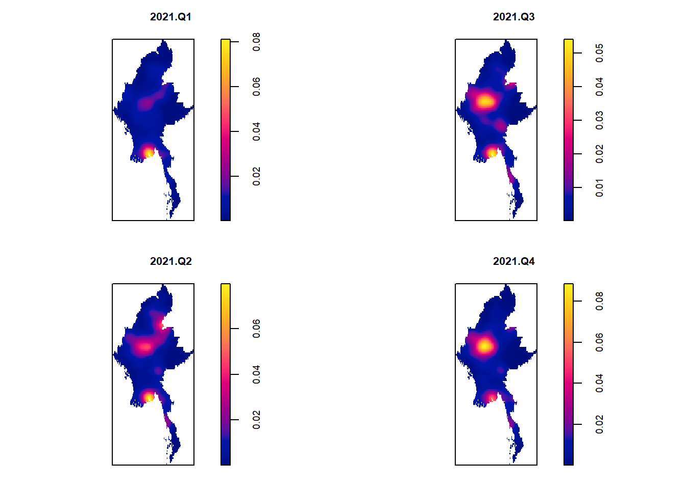

pacman::p_load(tmap, sf, tidyverse, raster, spatstat, sp, lubridate, sparr)Take-home_Ex01
1 Overview
1.1 Objective
To apply spatial point patterns analysis methods to discover the spatial and spatio-temporal distribution of armed conflict in Myanmar.
1.2 Background
2 Setup
2.1 Data
For the purpose of this assignment, armed conflict data of Myanmar between 2021-2024 from Armed Conflict Location & Event Data (ACLED), an independent, impartial, international non-profit organization collecting data on violent conflict and protest in all countries and territories in the world, should be used.
In terms of event types, students should focus on at least four main event types, namely: Battles, Explosion/Remote violence, Strategic developments, and Violence against civilians.
In terms of study period, students should focus on quarterly armed conflict events from January 2021 until June 2024.
Geospatial data on Myanmar Information Management Unit, MIMU
Myanmar OpenStreetMap
3 The Task
The specific tasks of this take-home exercise are as follows:
Using appropriate function of sf and tidyverse packages, import and transform the downloaded armed conflict data and administrative boundary data into sf tibble data.frames.
Using the geospatial data sets prepared, derive quarterly KDE layers.
Using the geospatial data sets prepared, perform 2nd-Order Spatial Point Patterns Analysis.
Using the geospatial data sets prepared, derive quarterly spatio-temporal KDE layers.
Using the geospatial data sets prepared, perform 2nd-Order Spatio-temporal Point Patterns Analysis.
Using appropriate tmap functions, display the KDE and Spatio-temporal KDE layers on openstreetmap of Myanmar.
Describe the spatial patterns revealed by the KDE and Spatio-temporal KDE maps.
4 Data preparation
4.1 Importing packages
Before starting the exercise, we need to import the necessary R packages. The following packages will be used:
- tmap: Used for creating static and interactive visualizations, including summary statistics and KDE layers.
- sf: Provides a standardized way to encode spatial vector data in the R environment, facilitating spatial data operations and analysis.
- st: Creates simple features from numeric vectors, matrices, or lists, enabling the representation and manipulation of spatial structures in R.
- spatstat: A package for statistical analysis of spatial data, particularly for Spatial Point Pattern Analysis. Developed by Baddeley, Turner, and Ruback (2015), it offers a comprehensive set of functions for first- and second-order spatial point pattern analysis and kernel density estimation (KDE).
- tidyverse: A collection of R packages designed for data science, all sharing a consistent design philosophy, grammar, and data structure.
- raster: Facilitates reading, writing, manipulating, analyzing, and modeling gridded spatial data (i.e., raster). In this exercise, it will be used to convert image outputs generated by spatstat into raster format.
- lubridate: Helps to split data into quarters based on their respective years.
- sparr: A package used for spatial and spatio-temporal kernel density estimation (STKDE). It provides methods for analyzing point patterns in space and time, helping to identify hotspots and spatial clustering over time. In this exercise, it is employed to perform spatio-temporal density analysis using the
spattemp.densityfunction.
4.2 Importing datasets
4.2.1 Geospatial Data
The following code chunk uses the st_read() function from the sf package to import the Myanmar shapefile into R. The imported shapefile will be an sf object, representing simple features for spatial analysis.
myanmar_sf <- st_read(dsn = "data/raw/geospatial",
layer = "mmr_polbnda_adm1_250k_mimu_1")%>%
st_transform(crs = 32647)Reading layer `mmr_polbnda_adm1_250k_mimu_1' from data source
`C:\ryanpxp\IS415-GAA\Take-home_Ex\Take-home_Ex01\data\raw\geospatial'
using driver `ESRI Shapefile'
Simple feature collection with 15 features and 6 fields
Geometry type: MULTIPOLYGON
Dimension: XY
Bounding box: xmin: 92.1721 ymin: 9.696844 xmax: 101.17 ymax: 28.54554
Geodetic CRS: WGS 844.2.2 Aspatial Data
The dataset obtained from ACLED is in CSV format. To work with this data in R, we need to import it as an sf object using the st_read() function from the sf package. This function processes the CSV data and produces an sf object for further analysis.
Since we require coordinates and date is not in a useful format to us, we make adjustments accordingly.Moreover, the data has been adjusted to ensure the EPSG coordinates are precise for Myanmar.
conflict_sf <- read_csv("data/raw/ACLED_Myanmar_2021_2024.csv") %>%
mutate(event_date = dmy(event_date)) %>%
st_as_sf(coords = c("longitude", "latitude"),
crs = 4326)%>%
st_transform(crs = 32647)4.2.3 OpenStreetMap Data
osm = st_read("data/raw/myanmar-osm.shp.zip", layer="gis_osm_roads_free_1")Reading layer `gis_osm_roads_free_1' from data source
`C:\ryanpxp\IS415-GAA\Take-home_Ex\Take-home_Ex01\data\raw\myanmar-osm.shp.zip'
using driver `ESRI Shapefile'
Simple feature collection with 569243 features and 10 fields
Geometry type: LINESTRING
Dimension: XY
Bounding box: xmin: 92.13721 ymin: 9.783255 xmax: 101.2285 ymax: 28.37868
Geodetic CRS: WGS 845 Data Wrangling
5.1 KDE
5.1.1 Adding columns for quarters
Adding decimal format of quarters for division of datsets later and quarter formatted string “YYYYQX” for presentation. Quarter sequence in the from of numbers 1 to 14 to represent 2021Q1, 2021Q2, … to 2024Q2 for STKDE analysis later.
conflict_sf <- conflict_sf %>%
mutate(DayofYear = yday(event_date)) %>%
mutate(Month_num = month(event_date)) %>%
mutate(Month_fac = month(event_date,
label = TRUE,
abbr = FALSE)) %>%
mutate(Quarter_decimal = quarter(event_date)) %>%
mutate(Quarter_label = paste(year(event_date), "Q", quarter(event_date), sep = "")) %>%
mutate(Quarter_sequence = (year(event_date) - 2021) * 4 + quarter(event_date))Rds is written for future readings:
write_rds(conflict_sf, "data/rds/myanmar_conflict.rds")conflict_sf <- read_rds("data/rds/myanmar_conflict.rds")Plot to give a sense of data:
tm_shape(myanmar_sf)+
tm_polygons() +
tm_shape(conflict_sf) +
tm_dots() +
tm_facets(by="Quarter_label",
free.coords=FALSE,
drop.units = TRUE)
5.1.2 Separating the data by year and quarter
The code chunk below separates the data provided into year and quarter for easier plotting.
A list is created to store the filtered data by year and quarter and is flatten to change from a list of 4 items with another 4 nested items each to a list of 16 items. Names were then assigned to these items in the list so that it will be more intuitive to retrieve the required sf than just calling a number.
# Define years and quarters
years <- 2021:2024
quarters <- 1:4
# Create a list to store the filtered data
conflict_list <- map(years, function(yr) {
map(quarters, function(qtr) {
conflict_sf %>%
filter(year == yr, Quarter_decimal == qtr)
})
})%>%
flatten() # Flatten the list to remove nested structure
# give names to the list items
names(conflict_list) <- map(years, function(yr) {
map(quarters, function(qtr) {
paste0("conflict_", yr, ".Q", qtr, "_sf")
})
}) %>%
unlist() # Unlist to match the flattened structure
# Remove specific problematic entries for 2024 Q3 and Q4
conflict_list <- conflict_list[!names(conflict_list) %in% c("conflict_2024.Q3_sf", "conflict_2024.Q4_sf")]In order to read the sf of 2021 q1:
conflict_list[["conflict_2021.Q1_sf"]]Simple feature collection with 4843 features and 32 fields
Geometry type: POINT
Dimension: XY
Bounding box: xmin: -203795.3 ymin: 1103500 xmax: 591875.9 ymax: 3042960
Projected CRS: WGS 84 / UTM zone 47N
# A tibble: 4,843 × 33
event_id_cnty event_date year time_precision disorder_type event_type
* <chr> <date> <dbl> <dbl> <chr> <chr>
1 MMR14614 2021-03-31 2021 1 Political violence Explosion…
2 MMR14614 2021-03-31 2021 1 Political violence Explosion…
3 MMR14632 2021-03-31 2021 1 Strategic developme… Strategic…
4 MMR14632 2021-03-31 2021 1 Strategic developme… Strategic…
5 MMR14625 2021-03-31 2021 1 Political violence Battles
6 MMR14625 2021-03-31 2021 1 Political violence Battles
7 MMR14609 2021-03-31 2021 1 Political violence Violence …
8 MMR14609 2021-03-31 2021 1 Political violence Violence …
9 MMR14618 2021-03-31 2021 1 Strategic developme… Strategic…
10 MMR14653 2021-03-31 2021 1 Political violence Violence …
# ℹ 4,833 more rows
# ℹ 27 more variables: sub_event_type <chr>, actor1 <chr>, assoc_actor_1 <chr>,
# inter1 <dbl>, interaction <dbl>, civilian_targeting <chr>, iso <dbl>,
# region <chr>, country <chr>, admin1 <chr>, admin2 <chr>, admin3 <chr>,
# location <chr>, geo_precision <dbl>, source <chr>, source_scale <chr>,
# notes <chr>, fatalities <dbl>, tags <chr>, timestamp <dbl>,
# geometry <POINT [m]>, DayofYear <dbl>, Month_num <dbl>, Month_fac <ord>, …5.1.3 Converting sf data frames to sp’s Spatial* class
The code chunk below uses as_Spatial() of sf package to convert the geospatial data from simple feature data frame to sp’s Spatial* class.
# Overall
conflict_sp <- as_Spatial(conflict_sf)
# Convert all sf objects to Spatial objects using map
conflict_sp_list <- map(conflict_list, as_Spatial)
# Give meaningful names to the list elements
names(conflict_sp_list) <- c(
"conflict_2021.Q1", "conflict_2021.Q2", "conflict_2021.Q3", "conflict_2021.Q4",
"conflict_2022.Q1", "conflict_2022.Q2", "conflict_2022.Q3", "conflict_2022.Q4",
"conflict_2023.Q1", "conflict_2023.Q2", "conflict_2023.Q3", "conflict_2023.Q4",
"conflict_2024.Q1", "conflict_2024.Q2"
)In order to read 2021 q1:
conflict_sp_list[["conflict_2021.Q1"]]class : SpatialPointsDataFrame
features : 4843
extent : -203795.3, 591875.9, 1103500, 3042960 (xmin, xmax, ymin, ymax)
crs : +proj=utm +zone=47 +datum=WGS84 +units=m +no_defs
variables : 32
names : event_id_cnty, event_date, year, time_precision, disorder_type, event_type, sub_event_type, actor1, assoc_actor_1, inter1, interaction, civilian_targeting, iso, region, country, ...
min values : MMR10890, 18628, 2021, 1, Demonstrations, Battles, Abduction/forced disappearance, ARSA: Arakan Rohingya Salvation Army, 88 Generation Peace and Open Society; Buddhist Group (Myanmar); Government of Myanmar (2016-); Students (Myanmar), 1, 10, Civilian targeting, 104, Southeast Asia, Myanmar, ...
max values : MMR62411, 18717, 2021, 3, Strategic developments, Violence against civilians, Violent demonstration, YURF: Yadanarbon Urban Revolutionary Front, Women (Myanmar); Rohingya Muslim Group (Myanmar), 7, 70, Civilian targeting, 104, Southeast Asia, Myanmar, ... 5.1.4 Converting the simple features to spatstat’s ppp (planar point pattern) object
spatstat requires the analytical data in ppp object form. Hence we will convert sf objects to ppp objects using as.ppp() function by providing the point coordinates and the observation window.
# overall
conflict_ppp <- as.ppp(st_coordinates(conflict_sf), st_bbox(conflict_sf))Warning: data contain duplicated points# Create names for the resulting ppp objects
ppp_names <- paste0(rep(years, each = 4), ".Q", rep(quarters, length(years)))
# Remove the last two names (2024q3 and 2024q4)
ppp_names <- ppp_names[1:(length(ppp_names) - 2)]
# Apply the conversion using map2 from purrr and assign the results dynamically
conflict_ppp_list <- map(conflict_list, ~ as.ppp(st_coordinates(.x), st_bbox(.x)))Warning: data contain duplicated points
Warning: data contain duplicated points
Warning: data contain duplicated points
Warning: data contain duplicated points
Warning: data contain duplicated points
Warning: data contain duplicated points
Warning: data contain duplicated points
Warning: data contain duplicated points
Warning: data contain duplicated points
Warning: data contain duplicated points
Warning: data contain duplicated points
Warning: data contain duplicated points
Warning: data contain duplicated points
Warning: data contain duplicated points# Assign names to the ppp list
names(conflict_ppp_list) <- ppp_namesQuick look at the new ppp object:
plot(conflict_ppp_list[["2021.Q2"]], main = "2021.Q2")
The summary statistics of a newly created ppp object:
summary(conflict_ppp_list[["2021.Q2"]])Planar point pattern: 7017 points
Average intensity 4.412701e-09 points per square unit
*Pattern contains duplicated points*
Coordinates are given to 13 decimal places
Window: rectangle = [-191409.1, 640934.5] x [1132472.1, 3042960.3] units
(832300 x 1910000 units)
Window area = 1.59018e+12 square units5.1.5 Handling duplicated points
It is previously mentioned in summary(acled_ppp) that there are duplicated points in the patterns. Duplication in ppp object can be confirmed by using the code chunk below.
any(duplicated(conflict_ppp_list[["2021.Q2"]]))[1] TRUEWe can address this by using rjitter() which will add a small perturbation to the duplicate points so that they do not occupy the exact same spaces.
A function was declared to apply rjitter() to all the items in the list.
# overall
conflict_ppp_jit <- rjitter(conflict_ppp,
retry=TRUE,
nsim=1,
drop=TRUE)
# Define a function to apply rjitter to each ppp object
jitter_conflict_ppp_func <- function(ppp) {
rjitter(ppp, retry = TRUE, nsim = 1, drop = TRUE)
}
# Apply jittering to all ppp objects
jittered_ppp_list <- map(conflict_ppp_list, jitter_conflict_ppp_func)Confirm if there is still any duplicate points:
any(duplicated(jittered_ppp_list[["2021.Q1"]]))[1] FALSE5.1.6 Creating owin object
Conversion of the myanmar_sf object into an owin object.
myanmar_owin <- as.owin(myanmar_sf)
plot(myanmar_owin)summary(myanmar_owin)5.1.7 Creating point events objects in owin Object
Create point events in owin Object after jittering the duplications.
# overall
conflictmyanmar_ppp = conflict_ppp_jit[myanmar_owin]# Define a function to merge ppp and owin object
merge_ppp_owin_func <- function(ppp, owin) {
ppp[owin]
}
conflictmyanmar_ppp_list <- map(jittered_ppp_list, ~ merge_ppp_owin_func(.x, myanmar_owin))Object combines both the point and polygon feature in one ppp object class.
summary(conflictmyanmar_ppp_list[["2021.Q1"]])plot(conflictmyanmar_ppp_list[["2021.Q1"]], main = "Myanmar Q1 2021")5.2 STKDE
5.2.1 Extracting the data by quarter
To prepare the sf object for STKDE, the Quarter_sequence was extracted from the sf object.
conflict_quarterly <- conflict_sf %>%
dplyr::select(Quarter_sequence)5.2.2 Converting the simple features to spatstat’s ppp object.
conflict_quarterly_ppp <- as.ppp(conflict_quarterly)5.2.3 Handling duplicated points
any(duplicated(conflict_quarterly_ppp))[1] TRUEConfirmation of the existence of duplicates, use rjitter()to remove duplicates.
conflict_quarterly_ppp <- rjitter(conflict_quarterly_ppp, retry = TRUE, nsimm = 1, drop = TRUE)
any(duplicated(conflict_quarterly_ppp))[1] FALSE5.2.4 Creating point events objects in owin Object
conflict_quarterly_Map_ppp = conflict_quarterly_ppp[myanmar_owin]
#summary(conflict_quarterly_Map_ppp)5.3 OpenStreetMap
Since the file is quite large we should try to reduce the size of the file
5.3.1 Data clean up
colnames(osm) [1] "osm_id" "code" "fclass" "name" "ref" "oneway"
[7] "maxspeed" "layer" "bridge" "tunnel" "geometry"Looking at the headers, fclass seems interesting.
unique(osm$fclass) [1] "primary" "secondary" "unclassified" "residential"
[5] "trunk_link" "primary_link" "tertiary" "service"
[9] "footway" "track" "trunk" "path"
[13] "living_street" "track_grade4" "secondary_link" "unknown"
[17] "track_grade5" "motorway" "steps" "track_grade2"
[21] "track_grade1" "track_grade3" "tertiary_link" "motorway_link"
[25] "pedestrian" "cycleway" "bridleway" We will keep these fclasses: “primary”, “secondary”, “residential”, “trunk_link”, “primary_link”, “tertiary”, “footway”, “trunk”, “secondary_link”, “tertiary_link”.
fclasses <- c("primary", "secondary", "residential", "trunk_link", "primary_link", "tertiary", "footway", "trunk", "secondary_link", "tertiary_link")
osm <- osm[osm$fclass %in% fclasses, ]To further reduce the size, we keep only osm_id and fclass
osm <- osm %>% dplyr::select('osm_id', 'fclass')We also have to transform the crs:
osm <- st_transform(osm, crs = 32647)5.3.2 Merging osm and sf
merged_myanmar <- st_union(myanmar_sf)
osm_myanmar <- st_intersection(osm, merged_myanmar)Rds is written for future readings:
write_rds(osm_myanmar, "data/rds/osm_myanmar.rds")osm_myanmar <- read_rds("data/rds/osm_myanmar.rds")Some geometries in the osm dataset are stored as MULTILINESTRING, which may cause issues during KDE calculations. To address this, we will split them into individual LINESTRING geometries.
osm_myanmar <- st_cast(st_cast(osm_myanmar, "MULTILINESTRING"),"LINESTRING")Warning in st_cast.sf(st_cast(osm_myanmar, "MULTILINESTRING"), "LINESTRING"):
repeating attributes for all sub-geometries for which they may not be constantsummary(osm_myanmar) osm_id fclass geometry
Length:273089 Length:273089 LINESTRING :273089
Class :character Class :character epsg:32647 : 0
Mode :character Mode :character +proj=utm ...: 0 6 First-order Spatial Point Patterns Analysis
6.1 Kernel Density Estimation
6.1.1 Rescaling KDE Layers
Since the distance is in meters we have to use rescale() function of spatstat package to covert the unit of measurement from meter to kilometer.
# overall
conflictmyanmar_ppp.km <- rescale(conflictmyanmar_ppp, 1000, "km")# Define a function covert the unit of measurement from meter to kilometer
rescale_km_func <- function(ppp) {
rescale(ppp, 1000, "km")
}
conflictmyanmar_ppp_km_list <- map(conflictmyanmar_ppp_list, rescale_km_func)6.1.2 Quarterly KDE layers
To have a understanding of what the value of sigma to use for the KDE layer, we plot using sigma value of 10, 25, 50, 100 on 2021 Q1.
myanmar_conflict_quarterly_Map_bw10 <- density(conflictmyanmar_ppp_km_list[["2021.Q1"]], sigma = 10, edge = TRUE, kernel = "gaussian")
myanmar_conflict_quarterly_Map_bw25 <- density(conflictmyanmar_ppp_km_list[["2021.Q1"]], sigma = 25, edge = TRUE, kernel = "gaussian")
myanmar_conflict_quarterly_Map_bw50 <- density(conflictmyanmar_ppp_km_list[["2021.Q1"]], sigma = 50, edge = TRUE, kernel = "gaussian")
myanmar_conflict_quarterly_Map_bw100 <- density(conflictmyanmar_ppp_km_list[["2021.Q1"]], sigma = 100, edge = TRUE, kernel = "gaussian")par(mfrow=c(2,2))
par(mar = c(3,2,2,1))
plot(myanmar_conflict_quarterly_Map_bw10, main = "10")
plot(myanmar_conflict_quarterly_Map_bw25, main = "25")
plot(myanmar_conflict_quarterly_Map_bw50, main = "50")
plot(myanmar_conflict_quarterly_Map_bw100, main = "100")
From the plot, sigma value of 50 looks like a good representation.
Now we plot the graphs:
# Define get kde
rescale_km_func <- function(pppkm) {
density(pppkm,
sigma=50,
edge=TRUE,
kernel="gaussian")
}
kde_conflictmyanmar_list <- map(conflictmyanmar_ppp_km_list, rescale_km_func)par(mfcol=c(2,2),
mar=c(1, 1, 2, 1),
cex.axis=0.7,
cex.main=0.8)
for (quarter in names(kde_conflictmyanmar_list)) {
plot(kde_conflictmyanmar_list[[quarter]], main = quarter)
}

6.1.3 Quarterly spatio-temporal KDE layers
conflict_quarterly_Map_ppp = rescale(conflict_quarterly_Map_ppp, 1000, "km")plot(conflict_quarterly_Map_ppp)
st_kde <- spattemp.density(conflict_quarterly_Map_ppp)Calculating trivariate smooth...Done.
Edge-correcting...Done.
Conditioning on time...Done.summary(st_kde)Spatiotemporal Kernel Density Estimate
Bandwidths
h = 39.5528 (spatial)
lambda = 0.0031 (temporal)
No. of observations
87644
Spatial bound
Type: polygonal
2D enclosure: [-210.0086, 724.6476] x [1072.026, 3158.467]
Temporal bound
[1, 14]
Evaluation
128 x 128 x 14 trivariate lattice
Density range: [1.024509e-21, 0.0003297299]# 1 to 14 for each quarter
tims <- c(1:14)
par(mfcol=c(2,2),
mar=c(1, 1, 2, 1),
cex.axis=0.7,
cex.main=0.8)
# function to map tims to "Year QQuarter"
get_quarter_label <- function(i) {
year <- 2021 + (i - 1) %/% 4 # Calculate the year
quarter <- (i - 1) %% 4 + 1 # Calculate the quarter (1 to 4)
return(paste(year, "Q", quarter, sep = ""))
}
for(i in tims){
plot(st_kde, i,
override.par=FALSE,
fix.range=TRUE,
main=get_quarter_label(i))
}

6.1.4 OpenStreetMap
osm_density <- density(conflictmyanmar_ppp_km_list[["2021.Q4"]],
sigma=50,
edge=TRUE,
kernel="gaussian")density_raster <- raster(osm_density)
projection(density_raster) <- CRS("+init=EPSG:32647")
plot(osm_myanmar)6.1.5 Interpretations
From the KDE and STKDE plots, the area around Mandalay, Sagaing, Kachin and Magway has a concentration of conflicts. The regions of Bago and Yangon also have some indications of clusters of conflicts.
7 Second-order analysis
After looking at the quarterly KDE layers these three areas have the highest amount of conflicts occurring in the Dry Zones: Magway, Sagaing, Mandalay.
The aims of conflict actors in the Dry Zone are relatively straightforward: to sustain the coup or overturn it.
Sagaing Region has emerged as a stronghold of resistance to military rule plagued by factionalism and in-fighting.
We will focus on these areas to understand the distributions of the conflicts instead of all the regions.
7.1 Second-order analysis Data Wrangling
7.1.1 Study areas filtering
The code chunk below targets the three areas mentioned previously.
MW <- myanmar_sf %>%
filter(ST == "Magway")
SGI <- myanmar_sf %>%
filter(ST == "Sagaing")
MDL <- myanmar_sf %>%
filter(ST == "Mandalay")7.1.2 Converting sf objects into owin objects
Spatstat requires the conversion of these sf objects into owin objects.
MW_owin <- as.owin(MW)
SGI_owin <- as.owin(SGI)
MDL_owin <- as.owin(MDL)7.1.3 Creating event points
MW_ppp = conflict_ppp_jit[MW_owin]
SGI_ppp = conflict_ppp_jit[SGI_owin]
MDL_ppp = conflict_ppp_jit[MDL_owin]rescale() to transform from meters to kilometers for its distance.
MW_ppp.km = rescale(MW_ppp, 1000, "km")
SGI_ppp.km = rescale(SGI_ppp, 1000, "km")
MDL_ppp.km = rescale(MDL_ppp, 1000, "km")The three area of interests are as shown:
par(mfrow=c(2,2))
par(mar = c(3,2,2,1))
plot(MW_ppp.km, main="Magway")
plot(SGI_ppp.km, main="Sagaing")
plot(MDL_ppp.km, main="Mandalay")7.2 G-Function for Spatial Point Process Analysis
We use G-function to determine if conflicts are occurring closer together than would be expected under random conditions, indicating potential hot spots.
7.2.1 Magway area
G_MW = Gest(MW_ppp, correction = "rs")
plot(G_MW, xlim=c(0,50))
To confirm the observed spatial patterns above, a hypothesis test will be conducted. The hypothesis and test are as follows:
Ho = The distribution of events in Magway are randomly distributed.
H1= The distribution of events in Magway are not randomly distributed.
The null hypothesis will be rejected if p-value is smaller than alpha value of 0.001.
Monte Carlo test with G-function:
G_MW.csr <- envelope(MW_ppp, Gest, nsim = 249)Generating 249 simulations of CSR ...
1, 2, 3, 4.6.8.10.12.14.16.18.20.22.24.26.28.30.32.34
.36.38.40.42.44.46.48.50.52.54.56.58.60.62.64.66.68.70.72.74
.76.78.80.82.84.86.88.90.92.94.96.98.100.102.104.106.108.110.112.114
.116.118.120.122.124.126.128.130.132.134.136.138.140.142.144.146.148.150.152.154
.156.158.160.162.164.166.168.170.172.174.176.178.180.182.184.186.188.190.192.194
.196.198.200.202.204.206.208.210.212.214.216.218.220.222.224.226.228.230.232.234
.236.238.240.242.244.246.248
249.
Done.plot(G_MW.csr)7.2.2 Sagaing area
G_SGI = Gest(SGI_ppp, correction = "border")
plot(G_SGI, xlim=c(0,50))To confirm the observed spatial patterns above, a hypothesis test will be conducted. The hypothesis and test are as follows:
Ho = The distribution of events in Sagaing are randomly distributed.
H1= The distribution of events in Sagaing are not randomly distributed.
The null hypothesis will be rejected if p-value is smaller than alpha value of 0.001.
Monte Carlo test with G-function:
G_SGI.csr <- envelope(SGI_ppp, Gest, nsim = 249)Generating 249 simulations of CSR ...
1, 2, [4:05 remaining] 3, 4 [4:04 remaining] .6 [4:03 remaining] .8
[4:02 remaining] .10 [4:03 remaining] .12 [4:13 remaining] .14 [4:23 remaining] .
16 [4:21 remaining] .18 [4:20 remaining] .20 [4:18 remaining] .22
[4:18 remaining] .24 [4:13 remaining] .26 [4:08 remaining] .28 [4:05 remaining] .
30 [4:01 remaining] .32 [3:57 remaining] .34 [3:54 remaining] .36
[3:51 remaining] .38 [3:48 remaining] .40 [3:47 remaining] .42 [3:44 remaining] .
44 [3:42 remaining] .46 [3:39 remaining] .48 [3:36 remaining] .50
[3:34 remaining] .52 [3:33 remaining] .54 [3:32 remaining] .56 [3:30 remaining] .
58 [3:27 remaining] .60 [3:25 remaining] .62 [3:23 remaining] .64
[3:20 remaining] .66 [3:18 remaining] .68 [3:15 remaining] .70 [3:13 remaining] .
72 [3:11 remaining] .74 [3:09 remaining] .76 [3:06 remaining] .78
[3:04 remaining] .80 [3:01 remaining] .82 [2:59 remaining] .84 [2:57 remaining] .
86 [2:55 remaining] .88 [2:52 remaining] .90 [2:50 remaining] .92
[2:48 remaining] .94 [2:47 remaining] .96 [2:45 remaining] .98 [2:43 remaining] .
100 [2:40 remaining] .102 [2:38 remaining] .104 [2:36 remaining] .106
[2:33 remaining] .108 [2:31 remaining] .110 [2:29 remaining] .112 [2:26 remaining] .
114 [2:24 remaining] .116 [2:22 remaining] .118 [2:19 remaining] .120
[2:17 remaining] .122 [2:16 remaining] .124 [2:14 remaining] .126 [2:12 remaining] .
128 [2:10 remaining] .130 [2:08 remaining] .132 [2:06 remaining] .134
[2:03 remaining] .136 [2:01 remaining] .138 [1:59 remaining] .140 [1:57 remaining] .
142 [1:55 remaining] .144 [1:53 remaining] .146 [1:51 remaining] .148
[1:50 remaining] .150 [1:47 remaining] .152 [1:45 remaining] .154 [1:43 remaining] .
156 [1:41 remaining] .158 [1:38 remaining] .160 [1:36 remaining] .162
[1:34 remaining] .164 [1:31 remaining] .166 [1:29 remaining] .168 [1:27 remaining] .
170 [1:25 remaining] .172 [1:22 remaining] .174 [1:20 remaining] .176
[1:18 remaining] .178 [1:16 remaining] .180 [1:14 remaining] .182 [1:11 remaining] .
184 [1:09 remaining] .186 [1:07 remaining] .188 [1:05 remaining] .190
[1:03 remaining] .192 [1:01 remaining] .194 [58 sec remaining] .196 [56 sec remaining] .
198 [54 sec remaining] .200 [52 sec remaining] .202 [50 sec remaining] .204
[48 sec remaining] .206 [46 sec remaining] .208 [44 sec remaining] .210 [42 sec remaining] .
212 [40 sec remaining] .214 [37 sec remaining] .216 [35 sec remaining] .218
[33 sec remaining] .220 [31 sec remaining] .222 [29 sec remaining] .224 [27 sec remaining] .
226 [25 sec remaining] .228 [22 sec remaining] .230 [20 sec remaining] .232
[18 sec remaining] .234 [16 sec remaining] .236 [14 sec remaining] .238 [12 sec remaining] .
240 [10 sec remaining] .242 [8 sec remaining] .244 [5 sec remaining] .246
[3 sec remaining] .248 [1 sec remaining]
249.
Done.plot(G_SGI.csr)7.2.3 Mandalay area
G_MDL = Gest(MDL_ppp, correction = "border")
plot(G_MDL, xlim=c(0,50))
To confirm the observed spatial patterns above, a hypothesis test will be conducted. The hypothesis and test are as follows:
Ho = The distribution of events in Mandalay are randomly distributed.
H1= The distribution of events in Mandalay are not randomly distributed.
The null hypothesis will be rejected if p-value is smaller than alpha value of 0.001.
Monte Carlo test with G-function:
G_MDL.csr <- envelope(MDL_ppp, Gest, nsim = 249)Generating 249 simulations of CSR ...
1, 2, 3, 4.6.8.10.12.14.16.18.20.22.24.26.28.30.32.34
.36.38.40.42.44.46.48.50.52.54.56.58.60.62.64.66.68.70.72.74
.76.78.80.82.84.86.88.90.92.94.96.98.100.102.104.106.108.110.112.114
.116.118.120.122.124.126.128.130.132.134.136.138.140.142.144.146.148.150.152.154
.156.158.160.162.164.166.168.170.172.174.176.178.180.182.184.186.188.190.192.194
.196.198.200.202.204.206.208.210.212.214.216.218.220.222.224.226.228.230.232.234
.236.238.240.242.244.246.248
249.
Done.plot(G_MDL.csr)7.2.4 Interpretation of G-Function
The observed G-function (solid line) deviates significantly from the theoretical and envelope lines, rising sharply and reaching a higher value.
This deviation suggests that the events in the three regions are not randomly distributed. The observed pattern shows clustering or aggregation of events at shorter distances. Given the sharp rise and high values of the observed function compared to the theoretical expectations, it’s likely that the null hypothesis will be rejected, indicating that the distribution of events in three regions is significantly different from a random spatial distribution.
The analysis suggests the presence of spatial autocorrelation or clustering in the three regions area, which could be important for understanding the underlying spatial processes or patterns in the region.
8 Conclusion
The spatial analysis of conflict events in Myanmar reveals significant clustering patterns, particularly when comparing the observed G-function with theoretical expectations. The observed G-function deviates sharply from the theoretical and envelope lines, suggesting that conflict events are not randomly distributed but instead show a tendency to cluster at shorter distances. This pattern indicates spatial autocorrelation, and the null hypothesis of random distribution is likely to be rejected.
Further insights from KDE and STKDE plots highlight concentrated conflict zones around Mandalay, Sagaing, Kachin, and Magway. Additionally, regions like Bago and Yangon show indications of conflict clusters. These findings suggest that specific regions in Myanmar experience more frequent or intense conflict activity, underscoring the need to explore underlying causes of spatial clustering in these areas. This clustering could be crucial for understanding the broader spatial processes driving conflict in the country.
This study’s identification of conflict clusters across regions in Myanmar, particularly in areas like Mandalay, Sagaing, Kachin, Magway, Bago, and Yangon, should provides critical insights into the spatial dynamics of conflict. Understanding where and how these conflicts concentrate can inform targeted peace building efforts, helping policymakers and organizations focus resources on the most affected areas. By addressing the root causes of conflict in these regions, this spatial analysis can play a pivotal role in fostering dialogue, promoting stability, and ultimately contributing to a more peaceful resolution of ongoing tensions in Myanmar.